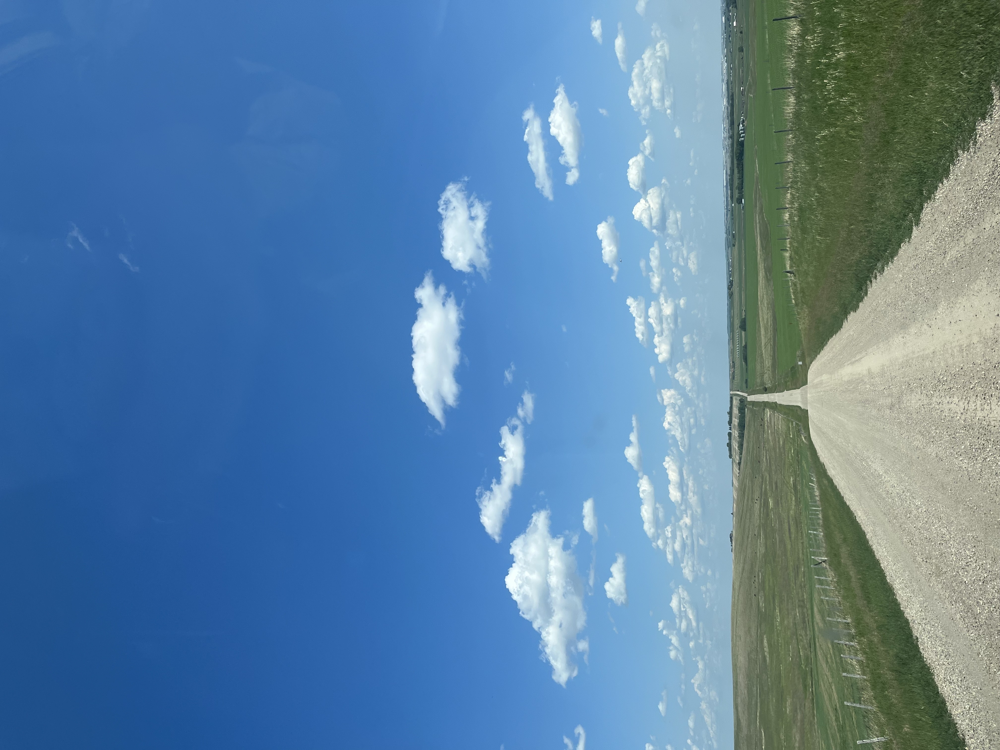

|  | >
|
自我介紹我是游欣婕,目前正在就讀靜宜大學資管系的大二生,對於資訊能力的這項專業中還在擴展的路上,我希望在這剩下的大學生活裡可以使自己的資訊能力更加的完整。 |
未來規劃在未來的工作我希望我能夠選擇跟ERP系統更相關的工作,比起純粹的撰寫與程式的相關工作,我更想做程式與管理結合的工作,這樣或許會更加的有趣。 |
對自己的期許時光飛逝,我的大學生活來到了第二年,很快的我也會從這間大學畢業,邁向人生的另一個階段,對於未來的規劃其實還沒有到非常的清楚,但經過這一年半的學習,我也更加有信心我想發揮我在大學所學到的專業知識去面對我未來的職涯生活,現在的我想對未來的自己說聲"加油!"。 |